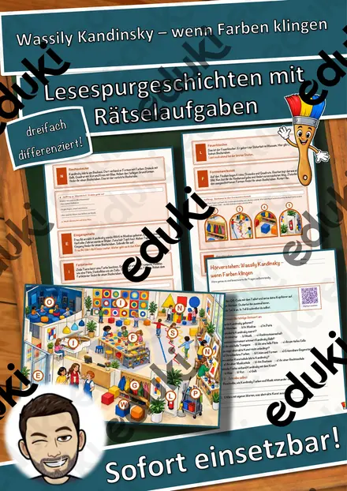
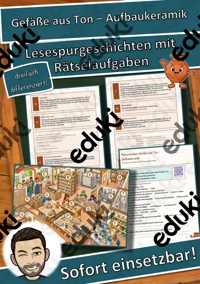
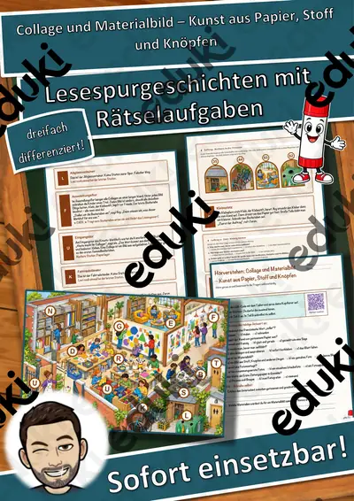
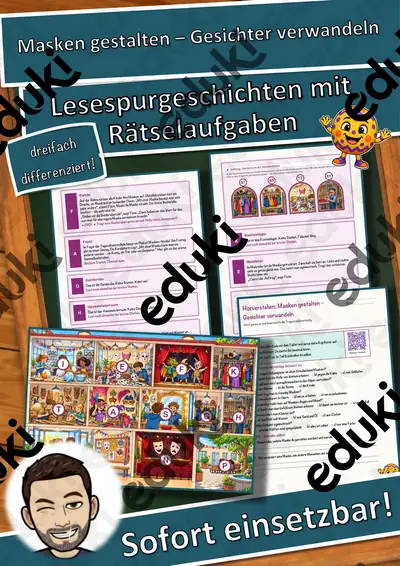
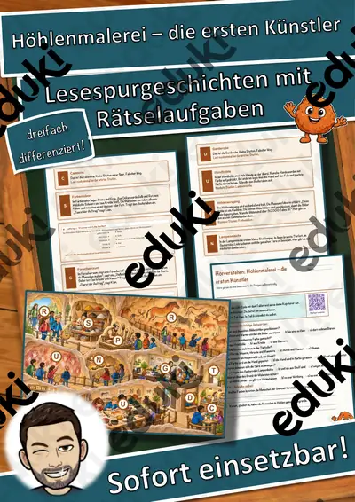
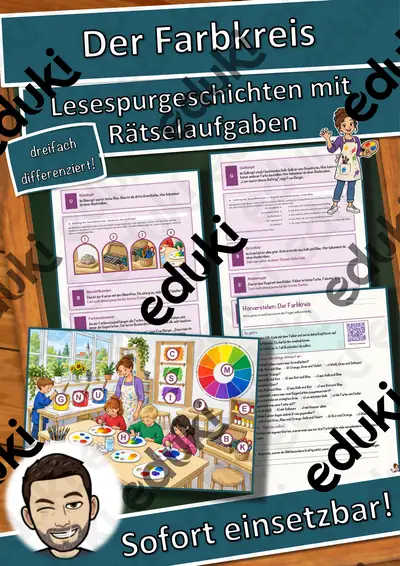

Handnähen – Säckchen für den Adventskalender – Lesespurgeschichte mit Rätselaufgaben (Klasse 5)
Handnähen – Säckchen für den Adventskalender – Lesespurgeschichte Textiles Gestalten (Klasse 5)Schick deine Klasse auf eine gemütliche Lesespur ins Nähzimmer! Hanna aus der 5. Klasse näht am Wochenende mit ihrer Oma Ilse kleine Stoffsäckchen für einen Adventskalender – Maskottchen ist die fröhliche Stecknadel Spitz. Vom Nähkorb über die Stoffkiste, das Nadelkissen, das Musterbrett und den Zuschneidetisch bis zum Nähtisch, zur Knopfdose, zur Bänderschublade und zur Adventsleiter lernen die Schülerinnen und Schüler Nähzeug, Vorstich, Steppstich und Überwendlichstich kennen und erfahren Schritt für Schritt, wie ein Säckchen mit Kordel entsteht. Am Ende jedes Abschnitts verrät ein Hinweis den nächsten Ort auf dem Plan – nur wer genau liest, findet den Weg und sammelt alle geheimen Buchstaben zum Lösungswort.
Die passende Lesespur für Textiles Gestalten in Klasse 5 – als Einstieg in ein Nähprojekt in der Adventszeit, ideal auch für Vertretungsstunden. Geeignet für alle Schularten (Mittelschule, Realschule, Gymnasium, Gesamtschule, Oberschule) in allen Bundesländern. Das Material ist SOFORT EINSETZBAR und in DREI DIFFERENZIERUNGSSTUFEN (leicht ★ / mittel ★★ / schwer ★★★) angelegt.WICHTIG: Das komplette Material ist sowohl in FARBE als auch in SCHWARZ-WEISS enthalten – ideal zum Sparen von Druckkosten.DAS IST ENTHALTEN
- Lesespurgeschichte in 3 Niveaus (leicht, mittel, schwer)
- farbiger Plan des Nähzimmers als Suchkarte
- Hörverstehen mit QR-Code zur MP3 (selbstständiges Hören mit Kopfhörern)
- vier Aufträge auf dem Weg: eine Zuordnung (Welcher Stich passt?), eine Rechenaufgabe, ein Quiz und ein Steckbrief
- Rätselseite (Wörter-Suchsel + Fragen rund ums Handnähen)
- Ausmalbild zum Thema
- ausführliches Lösungsblatt für die Lehrkraft mit allen Lösungen (Lesespur, Aufträge, Hörverstehen, Rätselseite)
- alles zusätzlich als komplette Schwarz-Weiß-VarianteSO GEHT DIE LESESPURDie Schülerinnen und Schüler lesen ab START, finden im Text den nächsten Ort, suchen ihn auf dem Plan und lesen bei dieser Station weiter. An jeder richtigen Station gibt es einen Buchstaben. Eingeplante Sackgassen (Wollkorb, Bügelbrett, Stuhlstapel, Fensterbank) sind keine Stationen und dienen der Selbstkontrolle. Am Ende werden die gesammelten Buchstaben umgestellt und ergeben ein geheimes Lösungswort. (Die Lösungen sind selbstverständlich nur im Lösungsblatt für die Lehrkraft enthalten.)INHALTLICHER SCHWERPUNKTNähzeug und sicherer Umgang mit Nadel und Schere, Faden einfädeln und verknoten, Vorstich, Steppstich und Überwendlichstich, Zuschneiden mit Nahtzugabe, Stoffteile rechts auf rechts legen, Knopf annähen, Kordel mit der Sicherheitsnadel einziehen.ABGEDECKTER LEHRPLAN (Klasse 5)
- Textiles Gestalten (Kerncurriculum Niedersachsen Oberschule) – ein Produkt mithilfe der Techniken Handnähen und Sticken gestalten; passend auch zum Textilen Gestalten anderer Länder.
- Mathematik – Sachaufgaben mit Multiplikation und Division.
- Deutsch – Sachtexte sinnentnehmend lesen; einem Hörtext gezielt Informationen entnehmen (Hörverstehen mit MP3).Geeignet für Freiarbeit, Stationenlernen, Vertretungsstunden, Wochenplan und als Einstieg in ein Nähprojekt. Klassenstufe 5 (auch 4 und 6).
Ähnliche Materialien

Wassily Kandinsky – wenn Farben klingen – Lesespurgeschichte mit Rätselaufgaben (Klasse 5)

Gefäße aus Ton – Aufbaukeramik – Lesespurgeschichte mit Rätselaufgaben (Klasse 5)

Collage und Materialbild – Kunst aus Papier, Stoff und Knöpfen – Lesespurgeschichte mit Rätselaufgaben (Klasse 5)

Masken gestalten – Gesichter verwandeln – Lesespurgeschichte mit Rätselaufgaben (Klasse 5)

Höhlenmalerei – die ersten Künstler – Lesespurgeschichte mit Rätselaufgaben (Klasse 5)

Der Farbkreis – Lesespurgeschichte mit Rätselaufgaben (Klasse 5)

Krippenbau – eine Weihnachtskrippe entwerfen und gestalten – Lesespurgeschichte mit Rätselaufgaben (Klasse 8)